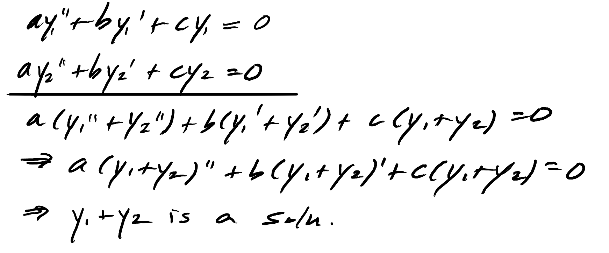
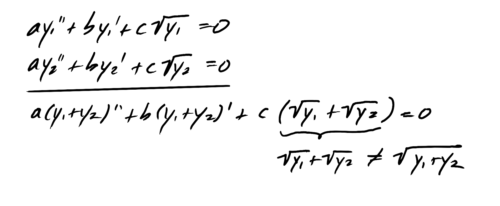
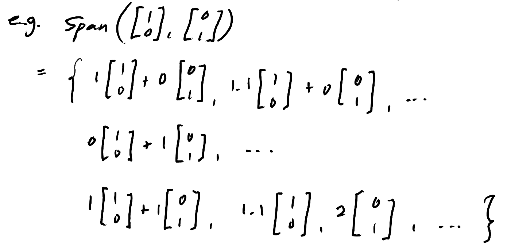
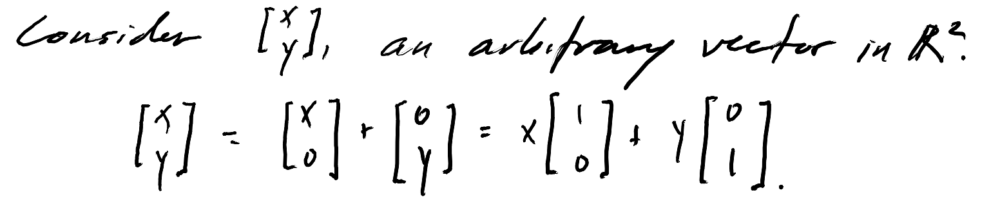

Assumes knowledge of: the superposition principle in quantum mechanics, basic differential equation classification. Familiarity with linear algebra concepts will be helpful, since while I try to build up that part from scratch I don't provide much discussion nor proofs. It will probably go down easiest if it is review.
A concept we use constantly in physics: given a linear, homogenous differential equation, a basis set exists which can generate all possible solutions to the diffeq via linear combination of its elements. I had been feeling shaky about the origins of this statement, but I knew this derived from linear algebra stuff I had seen before, so I am using this to trace its origins. Now I feel more stable and hopefully the reader will too. This concept, named, is the
superposition principle: If $y_1$ and $y_2$ are two solutions to a linear, homogenous diffeq, then so is $y_1 + y_2$.
For example, consider the equation $ay'' + by' + cy = 0$, where $a, b, c$ are scalars.

With this logic, one can then see then why if the equation were nonlinear or inhomogenous why the superposition principle no longer holds. For example, consider instead $ay'' + by' + c \sqrt{y} = 0$:

It's not too hard to see why the superposition principle works, but the main question of this writeup is not that. Rather, I want to know: why, via superposition, can a basis set generate all possible solutions to the equation?
Digression: Vector Spaces
First off, what is a basis, more rigorously? Let's forget about the physics for a moment and just work in math terms. We'll have to establish some preliminary defintions to work up to it.
Definition. The set $V$ is a vector space iff it satisfies some axioms. I won't list them all, but basically we want vector addition and scalar multiplication to be defined and act normal. [add citation]. Colloquially, it is a set of objects which we call vectors that you can add/substract to each other, and that you can multiply scalars to.
It's easiest to think of vectors as what we normally think of as a vector: an n x 1 matrix. But as long as they satisfy the axioms they can be anything — polynomials, etc.
aside: the axioms for vector spaces look similar to those of a field, but they're not the same. The field axioms only use elements of the field, whereas the vector space axioms use vectors and elements of a field (the scalars). So, fields are the more fundamental system, and vector spaces use fields to construct themselves.
q: I thought that the scalars would have to all be real numbers, but turns out they can be complex. How do you define what the scalars for vector spaces are, and how does their nature affect how the vector space "works," if at all? Since I'm ambiguous on this, I'll just treat all of my scalars as purely real, which is what the textbook I am studying does. This is not a trivial omission, however, because we use complex superpositions a lot in even in the most basic quantum mechanics problems.
todo: figure out complex scalar case
Definition. Given $\mathbf{v_1, ... v_n} \in V$, and $\alpha_1, ... \alpha_n \in S$,
\[
\alpha_1 \mathbf{v_1} + ... + \alpha_n \mathbf{v_n}
\]
is called a linear combination of $\mathbf{v_1, ... v_n}$. The set of all linear combinations of $\mathbf{v_1, ... v_n}$ is called the span of
$\mathbf{v_1, ... v_n}$.

Definition. The set $\{ \mathbf{v_1} ... \mathbf{v_n} \}$ is a spanning set for $V$ iff every vector in $V$ can be written as a linear combination of $\mathbf{v_1} ... \mathbf{v_n}$. Then we write that $\text{Span}(\mathbf{v_1} ... \mathbf{v_n}) = V$.
In terms of the above example, we would say $ \{ \begin{bmatrix} 1 & 0 \end{bmatrix}^T, \begin{bmatrix} 0 & 1 \end{bmatrix}^T \}$ is a spanning set for $\R^2$. Here's a quick proof:

Note that spanning sets are not unique: $ \{ \begin{bmatrix} 2 & 0 \end{bmatrix}^T, \begin{bmatrix} 0 & 2 \end{bmatrix}^T \}$ would also be a spanning set for $\R^2$.
Definition. If one or more of the vectors in a spanning set is in the span of the other vectors, we say the elements of the spanning set are linearly dependent. If not, we say they are linearly independent.
So, a spanning set for $\R^2$ whose vectors are linearly dependent would be $ \{\begin{bmatrix} 1 & 0 \end{bmatrix}^T, \begin{bmatrix} 0 & 1 \end{bmatrix}^T, \begin{bmatrix} 0 & 2 \end{bmatrix}^T \}$. Colloquially, it has extraneous elements, since there is a smaller subset of it that would still span $\R^2$. All of the previous examples turn out to have been linearly independent.
Definition. $\mathbf{v_1} ... \mathbf{v_n}$ is a minimal spanning set, also known as a basis, for $V$ iff:
1. $\mathbf{v_1} ... \mathbf{v_n}$ span $V$
2. $\mathbf{v_1} ... \mathbf{v_n}$ are linearly independent.
In summary, here are all of the terms that were introduced: vector space, linear combination, span, spanning set, linear dependence/independence, and basis. Digression end.
Now lets bring this back to the physics. Again given a linear, homogenous diffeq, we can treat the set of all possible solutions as a vector space. Then when we say a subset of solutions forms a basis, we mean that they span the entirety of possible solution space, and thus any solution can be written as a linear combination of the basis elements.
Actually, that was a lot of definitions to not really say much at all. All I've done is formalized the terms involved a little more, and shown that if it is the case that we can treat the solution space of a linear homogenous diffeq as a vector space, and if it is true that a certain set of equations is a basis for that space, then the superposition principle follows — that is, we can construct any solution in the solution space from its basis solutions. Now I need to justify those ifs, which is essentially justifying the analogy between solution space and vector space.